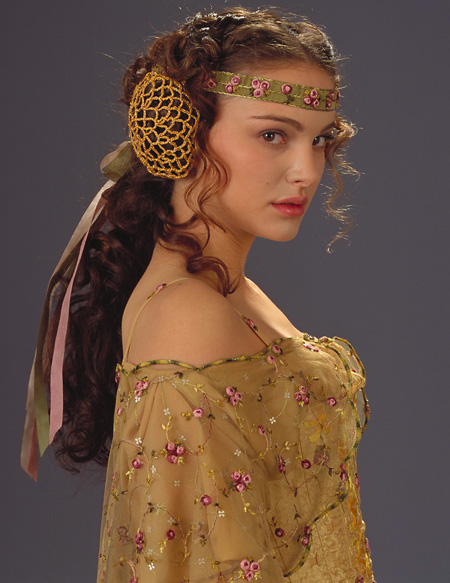

Хан Соло

В расширенной вселенной Звёздных Войн, Хан Соло многие годы был преступником — вором-карманником, мошенником, контрабандистом. Его карьера началась, когда ещё совсем ребёнком Хан попал к преступнику по имени Гаррис Шрайк. На борту грузового корабля «Удача Торговца» были и другие дети, которым предстояло пополнить банду Шрайка, и Хан научился у них тонкостям воровского ремесла. Корабль «Удача Торговца» вращался по орбите вокруг Кореллии, но он посещал и многие другие планеты по всей галактике, так что маленький Хан выучил множество языков. Кухарка вуки Дьюланна, служившая у Шрайка, была Хану вместо матери и научила его урчащему языку шириивук. Когда Хан подрос, он мечтал сбежать от Шрайка, но жестокий хозяин дорожил каждым своим «работником».
Однажды на Кореллии Хан встретил своего двоюродного брата Тракана Сал-Соло, но так и не смог достоверно выяснить, кто были его настоящие родители. Мальчик был сильно удивлён, обнаружив генеалогическое древо, согласно которому он происходил от Даллы Чёрного, знаменитого преступника, который жил много лет назад и провозгласил себя «королём Кореллии». Шрайк обнаружил, что у Хана есть способности пилота, и стал тренировать его для участия в гонках. Хан выигрывал крупные денежные призы, получал которые, конечно, Шрайк, и нажил себе смертельного врага в лице будущего наёмного убийцы Денгара: он во время неофициальной гонки разбил машину Денгара.
В 17 лет Хан во время открытых соревнований «Гуманоиды без правил» на Джубиларе привлёк внимание другого знаменитого наёмного убийцы. Боба Фетт по поручению хатта Джаббы издалека понаблюдал за тем, как дерётся юный кореллианец. Хан выиграл состязания, но Шрайк не стал обращаться с ним лучше. В 19 лет Хан сбежал с «Удачи Торговца», спрятавшись на грузовой барже, и оказался на Илезии — контролируемой хаттами планете, где добывали специи. Хатты из клана Бесадии наняли юного пилота водить грузовые корабли. На Илезии Хан полюбил красивую девушку, работавшую на добыче специй. Её звали Бриа Тарен. Хан решил похитить любимую с Илезии и угнал для этого хаттскую яхту, заслужив тем самым вечную смертельную ненависть клана Бесадии. Хан и Бриа вместе добрались до Корусанта, но роман их оказался недолгим. Бриа покинула Хана и стала искать в жизни собственную дорогу. Сердце Соло было разбито, и он пошёл в Имперский флот. Следующие четыре года юноша провёл в стенах Военной академии на Кариде, его соучениками были такие знаменитости, как Сунтир Фел и Мако Спинс. Хан Соло закончил Академию в числе первых учеников и начал службу флотским офицером и пилотом TIE Fighter. Осматривая останки потерпевшего крушение корабля, который перевозил рабов вуки, лейтенант Соло наотрез отказался выполнять приказ старшего офицера и не стал убивать единственного оставшегося в живых.
Вскоре после этого на Корусанте Соло спас того же самого вуки, которого едва не забил насмерть надзиратель на стройке. Вторично нарушив субординацию, Хан был уволен из Имперского флота. Понимая, что военной карьере конец, Хан нашёл работу в преступном мире на Нар Шаддаа. Чубакка, спасённый им вуки, заявил, что обязан ему жизнью, и повсюду следовал за ним.
Они начали перевозить специи для клана Десилиджик, членом которого был Джабба Хатт. Поначалу они летали на кораблях компании, а затем Соло приобрёл своё первое судно — «Брию». Хан страстно мечтал об усовершенствованном грузовом корабле своего нового друга Лэндо Калриссиана и в результате азартнейшего сражения в сабакк на Беспине выиграл у Калриссиана его драгоценный «Тысячелетний Сокол». Хан и Чубакка коренным образом усовершенствовали «Сокол», превратив его в один из самых совершенных звездолётов своего класса в галактике. Когда Империя стала представлять значительную опасность для контрабандистов, Соло и Чубакка на новом корабле отправились в Корпоративный Сектор и в Гегемонию Тион — большую область космоса, практически не затронутую имперскими силами.
Вернувшись, Соло встретил свою прежнюю любовь Брию Тарен, которая теперь стала видной фигурой Повстанческого Альянса, и вместе с ней отправился с рейдом на илезийские фабрики. Бриа обманула его и забрала всю добычу в пользу Повстанческого Альянса. Сердце Хана было разбито во второй раз. Сразу после этого расстроенный Хан сорвал очень важную для Джаббы сделку на Кесселе. К несчастью, во время одного из вылетов на «Тысячелетний сокол» высадились имперские таможенники, и Хан был вынужден сбросить контрабандный груз; Джабба пришёл в ярость и назначил за голову Соло и его напарника вознаграждение.
В результате в течение нескольких последующих лет за Соло гонялись охотники за наградой. После битвы при Эндоре Хан Соло женится на Лее и заводит с ней троих детей, которые в свою очередь сыграли немалую роль в истории Легенд Звёздных Войн. Дочь назвали так же как и мать Хана — Джейна, старшего сына — Джейсен, позже он повторит судьбу своего деда и станет известен как Дарт Кейдус. Младшего сына же назвали в честь отца Леи — Энакин Соло.
Люк Скайуокер

Родился за 19 ДБЯ, после развала Старой Республики. После того, как его отец обратился на тёмную сторону Силы, мать умерла, а сестра была удочерена Сенатором Бэйлом Органой и увезена на Алдераан, Люк воспитывался дядей (сводным братом отца) и тётей на пустынной планете Татуин. Имперские штурмовики, прилетевшие на Татуин в поисках похищенных повстанцами чертежей «Звезды Смерти», убили дядю и тётю Люка. Тогда юный Скайуокер, наставляемый старым джедаем Оби-Ваном Кеноби, примыкает к повстанческому Альянсу и становится значимой фигурой в ходе Галактической Гражданской войны. Будучи причастным к тайнам Силы, он возродил Орден джедаев, практически уничтоженный антагонистом джедаев — ситхом Императором Палпатином.
Плод запретной любви между Падме Амидалой и джедаем Энакином Скайуокером, Люк Скайуокер долго не ведал о своём происхождении. Всё детство Люк провёл на Татуине, работая на ферме своего дяди. Но однажды в руки Люку попали два дроида — C-3PO и R2-D2 — и последний поведал ему о своём задании — отыскать Оби-Вана Кеноби, которого Люк знал как странного отшельника, живущего неподалёку. Выслушав послание, переданное дроидами, Оби-Ван отправился на помощь товарищам и взял с собой Люка. Люк проявил себя способным учеником и смог обучаться у самого Йоды. Страшную тайну своего рождения Люк узнал от своего отца Дарта Вейдера. С покорностью и спокойствием, отличающими истинного джедая, Люк принял свою судьбу и продолжил сражаться. И наконец, Скайуокер безоружным пришёл в ловушку, подготовленную самим Императором с целью переманить его на Тёмную сторону. Во время сражения с отцом, Люк попытался повлиять на него с целью вернуть на светлую сторону Силы. После того как Дарт Вейдер был побеждён, Люк Скайуокер не стал его убивать и продолжил убеждать вернуться обратно к свету, несмотря на то, что в это время император подвергал его пыткам молнией, в итоге Дарт Вейдер осознал правоту сына и сбросил императора в шахту Звезды смерти, после чего сам погиб.
Дальнейшая судьба Люка описана в комиксах о звёздных воинах. После многочисленных приключениях подробно описанных в комиксах (например: становлением магистром, учителем, Гранд-магистром; изучения силы; определения природы тёмной и светлой стороны; восстановлении демократии в галактики; основания нового Ордена Джедаев), Люк сливается с силой, чтобы и в будущем наставлять будущие поколения. После приобретения Диснеем прав на франшизу «Звездных войн» все события основного канона после VI эпизода были расписаны заново, а то, что ранее именовалось Расширенной вселенной (англ. Extended Universe) и имело различные степени признания со стороны Lucasfilm, получило общее название «Легенды».
В фильме «Звёздные войны: Пробуждение силы» становится известно, что Люк действительно тренировал джедаев в возрождённой академии, но после того, как его племянник Бен Соло, будучи одним из его учеников, переходит на Тёмную Сторону и истребляет всю остальную академию, Люк уходит в изгнание на далёкую планету. В конце фильма Люк был найден восприимчивой к Силе мусорщицей Рэй с помощью оставленных координат, найденных R2-D2.
В фильме Звёздные войны: Последние джедаи, Люк Скайуокер принялся за обучение Рей искусствам Светлой стороны Силы и вступил в борьбу с силами Верховного Лидера Сноука и его ученика Кайло Рена — предводителя Рыцарей Рен. Уже стало известно, что в этом фильме, Кайло Рен (бывший ученик Люка Скайуокера) изменил свой характер на более жёсткий. После финальной схватки со своим бывшим учеником, в виде проекции, соединился с силой, как магистр Йода в VI эпизоде.
Йода
Никому не известно, на какой планете родился Йода. История также умалчивает о родственниках необычного джедая. Доподлинно известно, что Йода (и это настоящее имя героя) попал в воинский Орден, будучи взрослым. Мужчина покинул родную планету в поисках заработка, но на корабль Йоды напали. Потеряв управление космическим судном, будущий магистр приземлился на неизвестную планету. Там, в обломках корабля, Йоду обнаружил мастер-джедай Н'ката Дель Гормо. Мастер Йода Змееподобное существо открыло герою правду: Йода наделен Силой и станет великим джедаем, нужно только терпеливо учиться. Н'ката Дель Гормо несколько лет преподавал ученику основы владения Силой, после чего Йода отправился на Корусант, где продолжил обучение в должности младшего джедая. Дальнейшая биография мужчины развивалась стремительно.
Первое официальное звание рыцаря-джедая, первый ученик (имя которого не сохранилось), первое назначение в Высший Совет. Мастер Йода с мечом Чувствительный к Силе и изменениям вокруг, в возрасте 100 лет Йода создает голографические записи, содержащие все секреты и техники джедаев. Мудрый рыцарь отдает архив знакомой, предрекая, что в будущем эти записи помогут избранному обучить новое войско рыцарей. Спустя 200 лет записи попадут в руки Люка Скайуокера.
В это же время Йода берет под опеку нового ученика по имени граф Дуку. Официально магистр не являлся учителем будущего ситха, но питал к юноше особый интерес. Йода обучил Дуку владению световым мечом, что вывело юного джедая на новый уровень в Ордене. Энакин перед Йодой на совете Все изменилось, когда на Высшем Совете впервые прозвучало имя Энакина Скайуокера. Квай-Гон Джинн долго убеждал магистров, что мальчик полон Силы и нуждается в учителе. Именно Йода отказывает Квай-Гону в просьбе, объяснив, что будущее мальчика – туманно. Но после смерти Квай-Гона мудрец позволяет Оби-Вану взять на себя роль учителя. Поддавшись чувствам, Йода совершает непоправимую ошибку.
Спустя годы судьба вновь сталкивает мудрого джедая с графом Дуку. Теперь учитель и ученик служат разным целям и идеалам. Уже пожилой Йода показывает в битве невероятную ловкость. Как бы хорошо ни учился граф Дуку, но с мечом Йода управляется намного лучше. Напряжение вокруг Ордена нарастает. Йода, чувствующий колебания Силы, отказывает повзрослевшему Энакину в должности в Высшем Совете. Мудрый старец не доверяет способному джедаю, хотя и не осознает всю опасность, исходящую от Скайуокера. Ударом для Йоды стало внезапное возвращение в храм джедаев. Явившись на Корусант, старый учитель находит тела молодых учеников и братьев по оружию. Каждая смерть отдается в сердце Йоды острым уколом боли. Великий мастер винит себя в произошедшем, ведь он не почувствовал Темную Сторону Энакина. Мастер Йода Опустошенный Йода отдает приказ Оби-Вану убить бывшего ученика, а сам отправляется на сражение с великим злом — Императором Палпатином. Увы, боль потерь и разочарование в Скайуокере ослабили магистра. Рыцарь-джедай выживает в схватке с ситхом, но не в состоянии убить противника. Единственное, что остается мудрому учителю, — сбежать на далекую планету, чтобы дождаться нового ученика, наполненного Силой.
Через 22 года на заброшенной планете системы Дагоба магистра находит Люк Скайуокер. Юноша жаждет стать джедаем и по совету Оби-Вана просит Йоду обучить его мастерству. Уставший от жизни рыцарь не желает брать на себя такую ответственность, но настойчивый молодой человек не сдается. Мастер Йода умирает Люк Скайуокер становится новым и последним учеником великого Йоды. Мастер вкладывает в парня навыки и умения, которыми обладает сам. Но Люк, не закончив обучение, оставляет учителя и отправляется спасать друзей. Вернувшись, Скайуокер застает печальную картину — старый Йода умирает. Великий джедай, обучивший 20 000 учеников, мирно сливается с Силой. Смерть Йоды, как и жизнь магистра, особенна. В отличие от собратьев, мужчина покидает мир в спокойной обстановке, а не во время очередной битвы. В 900-летнем возрасте Йода тихо растворяется во Вселенной.
Падме Амидала
В 12 лет девочка впервые покинула родную деревню, чтобы навестить бабушку, проживающую в Тиде — столице планеты. Городская жизнь захватила ребенка, поэтому Падме решила переселится в город. Уже в столь юном возрасте девочка отличалась от сверстников настойчивостью и целеустремленностью.
Политическая карьера Падме началась быстро и головокружительно. Еще не достигнув 13 лет, девочка занимает пост правительницы Тида, а в 14 лет героиня получает титул королевы Набу и в качестве тронного имени добавляет к собственному слово «Амидала».
Обязанности коронованной особы легли на плечи юной девушки тяжелым грузом. Падме не только принимает важные для планеты решения, но и проводит время на приемах, для которых облачается в тяжелые и неудобные костюмы. Чтобы скрыть собственную внешность, Амидала наносит сложный макияж. Подобная мера – вовсе не дань моде, а способ обезопасить королеву. Так никто не узнает, как на самом деле выглядит Падме. К тому же девушку везде сопровождает двойник — служанка по имени Сабе.
Спокойное правление Амидалы продолжается недолго. Вскоре возникает конфликт, в котором королеве Набу противостоит Торговая Федерация. Напряженная ситуация перерастает в войну, и, заручившись помощью джедаев, Падме покидает родную планету.
Во время побега на корабль королевы нападают. Падме, Оби-Ван Кеноби и Квай-Гон Джин приземляются на планете Татуин. Помогает странникам с починкой судна мальчик по имени Энакин Скайуокер. Падме производит на юного механика неизгладимое впечатление.
Королеве все-таки удается добраться до Сената, на котором девушка произносит речь, цитаты из которой не нравятся местным политикам. Амидала покидает совет, так и не добившись помощи для Набу. Но характер королевы не позволяет сдаться. Падме заключает выгодный договор с расой гунганов и штурмом освобождает родную планету.
Спустя 10 лет Падме Амидала продолжает движение по карьерной лестнице. Королева Набу получает новое назначение — теперь целеустремленная девушка занимает место сенатора в Совете, решающем судьбу Галактики.
Высокая должность и смелые высказывания делают Падме опасной для сенатора Палпатина. На героиню вновь начинается охота. Смелая девушка обращается за помощью к джедаям, и в телохранители к героине назначают старых знакомых — Оби-Ван Кеноби и повзрослевшего Энакина.
Молодые люди много времени проводят наедине. Небольшая разница в возрасте и схожие взгляды на жизнь сближают Падме и Скайуокера. Развитию романа способствуют опасные ситуации: на Амидалу совершают покушения, учителя Энакина держат в плену.
Во время сражения за свободу Оби-Вана молодые люди попадают в плен. Ожидая смерти, девушка решается на очередной рискованный шаг: Падме признается молодому джедаю в любви. Начало войны клонов отходит для молодого сенатора на второй план, все затмевают чувства.
К счастью, сражение с графом Дуку заканчивается победой Скайуокера и Амидалы. Вскоре молодые люди втайне от знакомых связывают жизнь узами брака. Девушка счастлива. Теперь рядом с героиней любимый мужчина, который защитит ее от врагов. Меняется даже внешность сенатора: строгие официальные платья сменяются легкими романтичными нарядами, а сложная прическа уступает место нежным локонам.
Влюбленные продолжают скрывать брак от окружающих, поэтому много времени проводят раздельно. Падме исполняет обязанности сенатора при Совете, а Энакин постигает науку джедаев и путешествует с учителем по Галактике. Новость о беременности стала для Амидалы одновременно счастливой и тревожной. Девушка рада пополнению в семье, но боится, что лишится политической карьеры.
Скрывая собственное положение, Падме продолжает вести оппозиционную деятельность, направленную против сенатора Палпатина. Девушка чувствует себя виноватой, ведь Амидале известно, что супруг расположен к тирану. Поняв, что Республику не спасти, что надвигается эра тирании, героиня возвращается на родную планету, чтобы в спокойной обстановке стать матерью.
Новость о переходе мужа на Темную сторону застала Падме врасплох. Девушка замечала изменения в муже, но не думала, что Энакин способен творить зло. Не поверив словам Оби-Вана, героиня отправляется к Скайуокеру, чтобы лично убедиться в услышанном. Но долгожданная встреча оказывается для Падме шокирующим событием. Любимый больше не похож на себя, теперь перед девушкой стоит Дарт Вейдер.
С трудом избежав гибели, Амидала отправляется в госпиталь. Поздний срок беременности и стресс, который героиня испытала от печальных новостей, приблизил роды. В больнице Падме рожает близнецов, но радостная новость не интересует девушку. Королева Набу, сенатор Совета и жена джедая больше не видит смысла жизни. В 27 лет молодая и целеустремленная героиня больше не хочет бороться за будущее. Падме Амидала предпочитает спокойную смерть дальнейшему существованию без любимого.